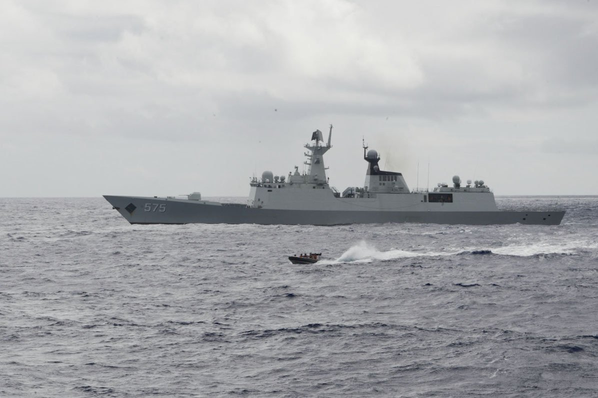

[한일수교 60년 번외⑤] 일본 언론이 걱정한 것은 한일관계였고, 터진 것은 중일관계였다
2025년 10월 다카이치 총재 당선 직후 아사히·요미우리·니혼게이자이가 한일 마찰을 우려했다
1년 뒤 야스쿠니 참배는 없었고 셔틀외교는 두 차례 열렸다, 한일은 마찰이 없었다
대신 대만 발언으로 중일이 급랭해 희토류 수출 금지까지 갔다
AI경제저널=김갑봉 기자 | 2025년 10월 4일 다카이치 사나에가 자민당 총재로 뽑혔을 때 일본 언론은 한일관계의 악화를 걱정했다. 1년 뒤 그 걱정은 빗나갔다. 빗나간 방식이 중요하다.

※ 이 연재는 2025년 인천투데이에 실린 「한일수교 60년」 연재를 잇는다. 논지는 이어받되 수치와 사실은 2026년 10월 기준으로 다시 확인해 썼다.
2025년 10월에 나온 우려
가. 아사히신문
다음 총리가 과거사로 한국을 자극하면 한국 정부가 국내 여론의 압박을 받아 대응이 어려워진다고 했다. 다카이치를 강한 우파로 봤다.
나. 요미우리신문
셔틀외교 재개는 의미가 있으나 순조롭게 이어질지 예측하기 어렵다고 했다. 야스쿠니 참배가 이재명 대통령 지지층의 반발을 부를 수 있다고 봤다. 과거사 문제에서 이미 불만이 나오고 있다고 했다.
다. 니혼게이자이신문
게이오대 니시노 준야 교수를 인용해 한미일 안보 공조를 유지해야 한다고 했다. 트럼프 대통령이 김정은 국무위원장과 만나려는 국면에서 과거사 분쟁은 문제가 된다고 봤다.
라. 공통점
세 신문의 우려는 모두 과거사와 야스쿠니에 걸려 있었다. 다카이치가 각료 시절 해마다 야스쿠니를 참배했고 2025년 8월 15일에도 참배했다는 사실, 다케시마의 날 행사에 차관급이 아니라 각료를 보내라고 요구했다는 사실이 근거였다.
2026년에 실제로 일어난 일
가. 야스쿠니는 가지 않았다
2025년 10월 총재가 된 뒤 추계 대제에 참배하지 않았다. 2026년 총리가 된 뒤 춘계 대제에도 참배하지 않았다. 2026년 8월 15일에는 사비로 다마구시를 봉납하고 멀리서 참배했다. 2026년 10월 17일 추계 대제에는 '내각총리대신 다카이치 사나에' 이름으로 마사카키를 봉납하고 참배하지 않았다.
총재가 되기 전에는 정기적으로 갔다. 그 뒤 네 차례 모두 가지 않았다.
나. 셔틀외교는 두 차례 열렸다
2026년 1월 13일 나라, 5월 19일 안동이다. 두 차례 모두 고향에서 열렸다. 5월 7일 서울에서 한일 외교·국방 2+2 안보정책협의회가 처음 차관급으로 열렸다.
액화천연가스 공급협력 약정, 원유 공급·비축 정보 공유, 핵심광물 공급망 협력, 호르무즈 해협 항행 협력, 조세이 탄광 유골 DNA 감정 절차가 합의됐다.
다. 한일 마찰은 없었다
2026년 10월 기준으로 야스쿠니 참배나 독도 관련 발언으로 한일 사이에 외교 마찰이 생긴 사례를 확인하지 못했다. 다케시마의 날 행사에 각료가 참석했는지도 확인하지 못했다.
터진 쪽
2025년 11월 7일 다카이치 총리가 중의원 예산위원회에서 중국의 대만 해상 봉쇄가 일본의 존립을 위협할 수 있고 집단적 자위권을 쓸 수 있다고 답했다. 철회하지 않았다.
중국은 경제 제재와 문화교류 중단을 발표하고 2026년 1월 6일 희토류 수출을 금지했다. 2025년 12월에는 중국 전투기가 일본 항공자위대 F-15에 레이더를 조준한 사건이 있었다. 2026년 9월 중국 외교부는 브리핑에서 일본 총리의 직함을 뺐다.
일본 언론이 걱정한 '강한 우파의 외교 마찰'은 현실이 됐다. 다만 상대가 한국이 아니라 중국이었다.
왜 방향이 달라졌나
가. 비용 계산이 달랐다
야스쿠니 참배의 비용은 한국과 중국 양쪽의 반발이다. 참배를 보류하면 두 쪽 비용을 동시에 줄인다.
대만 관련 발언의 비용은 중국 한 쪽이다. 지지 기반에 주는 신호는 참배와 비슷하다.
비용이 한 쪽에만 걸리고 효과는 같은 선택이 있으면 그쪽을 고른다. 2026년의 결과는 그 계산으로 설명된다.
나. 한국은 거리를 뒀다
이재명 대통령은 대만 문제가 중국과 일본 사이 사안이고 한국이 개입할 일이 아니라고 했다. 대화로 풀리기를 바란다고 했다.
이 대응으로 한국은 중일 갈등에 끌려들지 않았다. 동시에 일본의 집단적 자위권 해석 확대에 대한 공식 입장을 정리할 기회를 미뤘다.
1998년과 2015년의 사이
1998년 김대중-오부치 공동선언과 1995년 무라야마 담화가 과거사 처리의 기준이다. 아베 정권기에 그 기준이 약해졌다. 2013년 아베 총리의 야스쿠니 참배가 있었고 2015년 전후 70년 담화에서는 '반성'은 남고 '사죄'는 빠졌다.
2015년 위안부 합의와 2018년 강제동원 대법원 판결이 마찰의 원천이 됐다.
2026년에는 이 목록에 새 항목이 추가되지 않았다. 추가되지 않은 것이 해결된 것은 아니다. 계정이 멈춰 있는 것이다.
교훈
가. 우려의 방향보다 구조를 볼 것
일본 언론 세 곳이 모두 과거사를 걱정했는데 터진 것은 안보 발언이었다. 과거사는 일정표에 있고 안보 발언은 질의응답에서 나온다.
예측해야 할 것은 상대가 무엇을 믿는지가 아니라 어디서 발언이 나오는지다.
나. 마찰이 없는 해를 쓰는 법
2026년은 한일 사이에 마찰이 없었다. 그런 해에 해야 할 일은 문서를 만드는 것이다.
2026년 한국은 에너지와 공급망 약정을 만들었다. 과거사 쪽에서는 유골 감정 절차 하나다. 마찰이 없는 해에 과거사 문서를 하나도 더 만들지 못했다는 점은 기록해 둘 일이다.
다음에 마찰이 생기면 그때는 만들 수 없다.
참고문헌
아사히·요미우리·니혼게이자이 2025년 10월 자민당 총재 선거 관련 보도
일본 중의원 예산위원회 회의록, 2025년 11월 7일
경향신문, 다카이치 야스쿠니 공물 봉납 보도, 2026년 10월 17일
대한민국 대통령실, 한일 정상회담 결과 발표, 2026년 1월·5월
인천투데이, 「한일수교 60년 번외⑤」, 2025년 10월 5일
※ 이 기사는 AI 프로그램 클로드를 활용해 작성했습니다.
관련기사
- [한일수교 60년 번외⑥] 다카이치노믹스의 청구서, 10년물 국채금리 2.830%가 왔다
- [한일수교 60년 번외④] 조선학교 55곳, 학생 6000~8000명… 한국 국적 학생이 다닌다
- [한일언론포럼 후기①] "실용"이라 불린 1년, 과거사는 어디로 갔나
- [한일수교 60년 번외③] 고시엔 우승 학교에도 초등 과정이 없다, 2026년에도 그대로다
저작권자 © AI경제저널 무단전재 및 재배포, AI학습 및 활용 금지